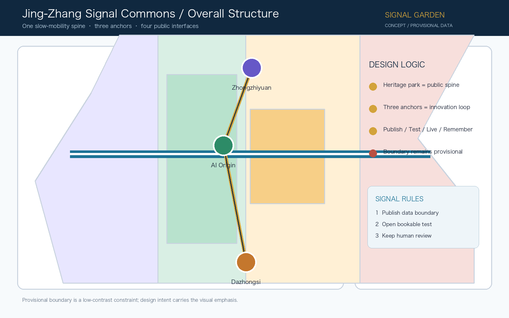
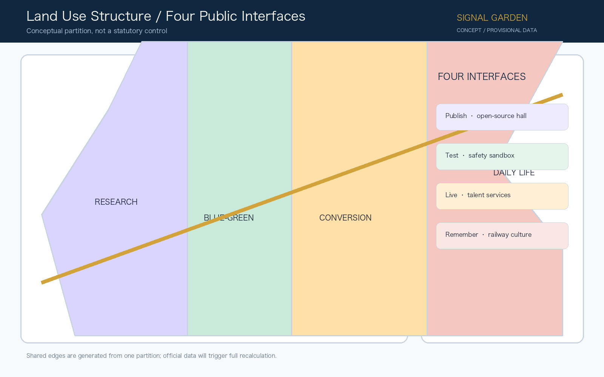
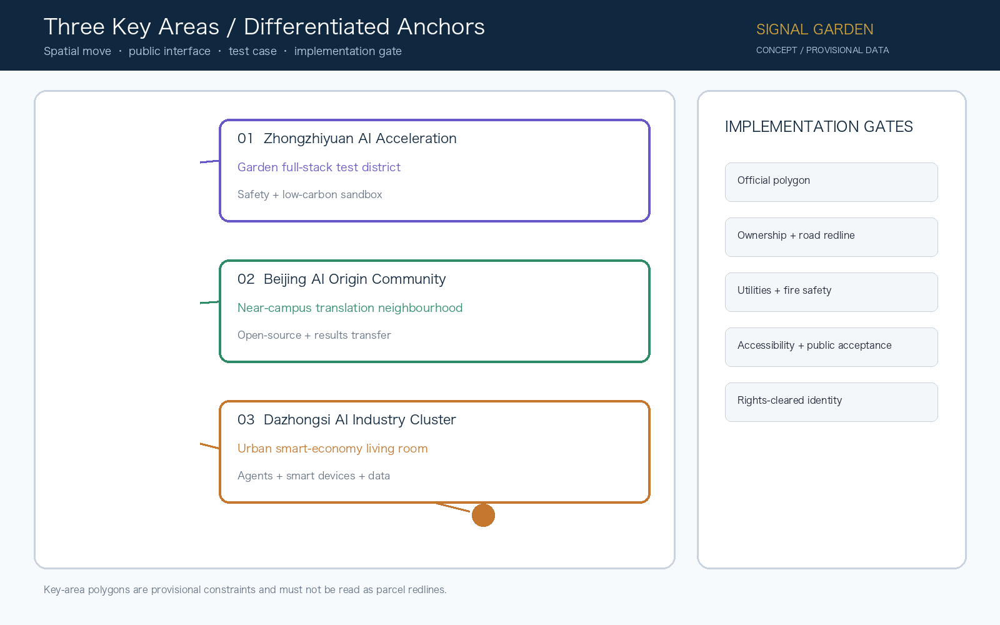
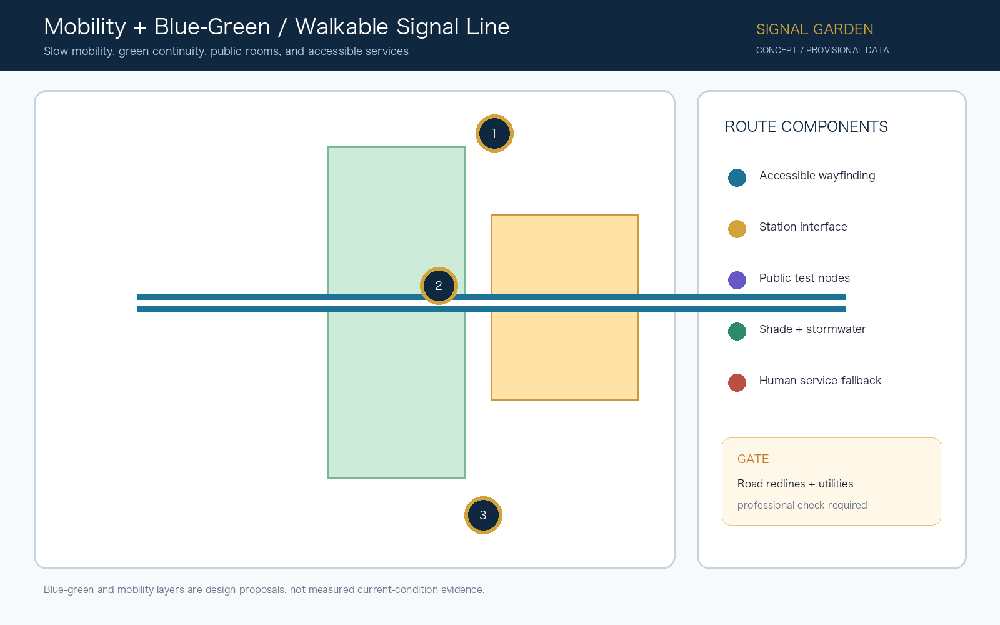
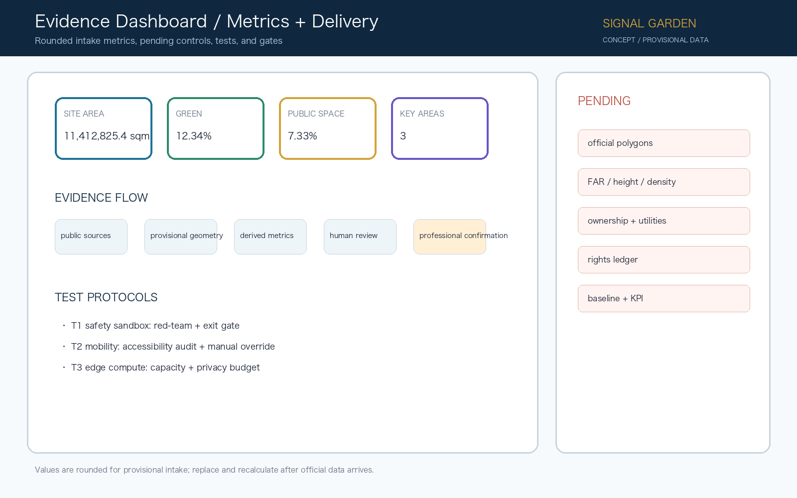

Zhongzhiyuan AI Acceleration
Garden full-stack test district; safety and low-carbon sandbox.
One slow-mobility spine, three innovation anchors, and four public interfaces—Publish, Test, Live, Remember. This offline page is an explanatory layer; GeoJSON, metrics, matrices, and self-check remain authoritative.
Spatial intent is carried by the heritage park spine, the three anchor loop, and the Signal Garden rules.

The conceptual partition connects research, blue-green space, conversion services, and daily life without asserting statutory controls.

Each anchor has a differentiated role and an explicit professional verification gate.

Garden full-stack test district; safety and low-carbon sandbox.
Near-campus translation neighbourhood; open-source and results transfer.
Urban smart-economy living room; agents, devices, and data.
Accessible wayfinding, station interfaces, public test nodes, shade, stormwater, and human-service fallback share one route.

JZ / ~ / + compresses railway memory, continuity, and collaboration. It is a concept identity and requires rights clearance before deployment.

Rounded provisional intake metrics are shown with pending official controls and test protocols.
